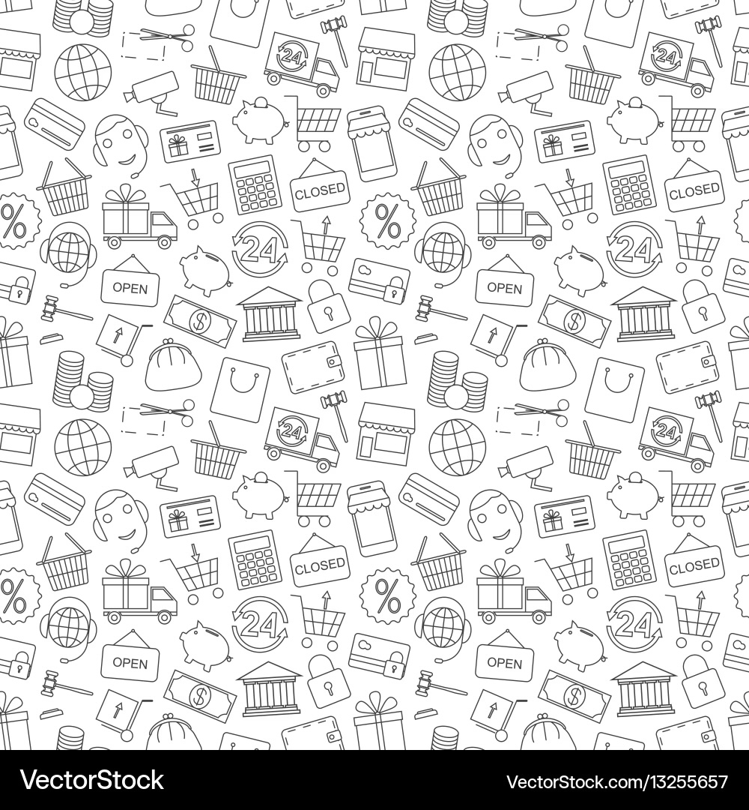

‹ Back

Mobile User Flow
UX/UI Design
2016
As a Designer I did...
- Problem Definition: Led workshops with stakeholders to map the friction points of the existing mobile loan funnel.
- Strategic Research: Analyzed competitor mobile journeys to inform a more modern, frictionless lending experience.
- Structural Validation: Proposed and iterated on a new navigation architecture, securing buy-in from product and technical leads.
- High-Fidelity Prototyping: Created high-fidelity Mobile-First responsive mockups to simulate the final user experience.
- Design-to-Dev Handoff: Managed the iteration of wireframes and oversaw the final visual design phase to maintain UI consistency.